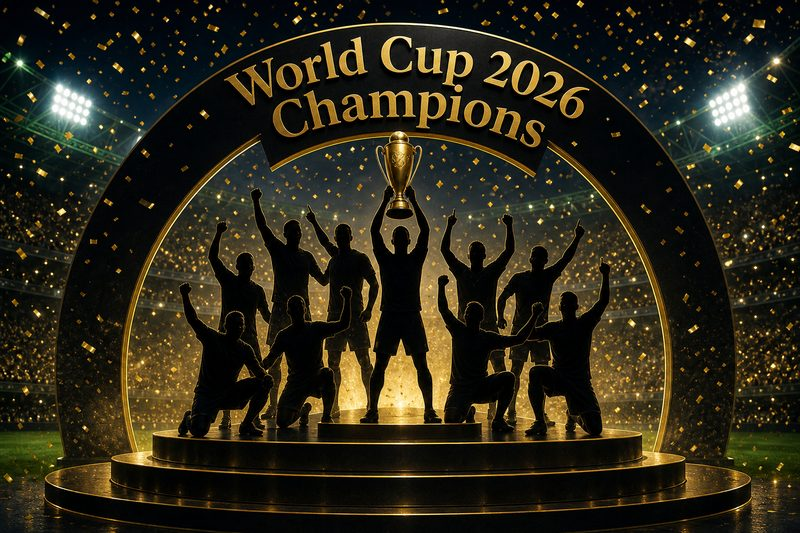
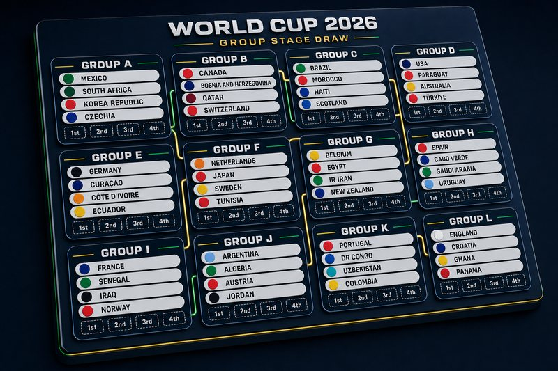

Unofficial fan vote
World Cup 2026 Fan Vote
Not affiliated with FIFA
Cast your vote
Loading teams…

Tournament winner One pick · 48 teams Vote now
Match polls Group stage · live Pick matchesUnofficial fan vote
Not affiliated with FIFA
Loading teams…

Tournament winner One pick · 48 teams Vote now
Match polls Group stage · live Pick matches